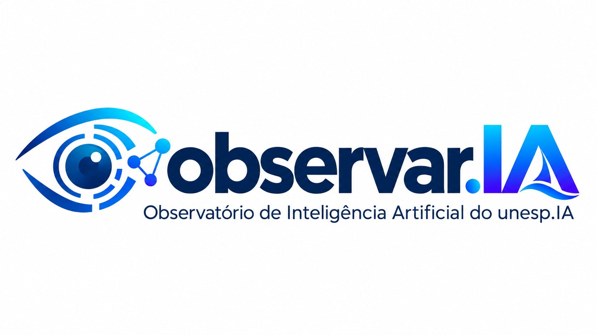
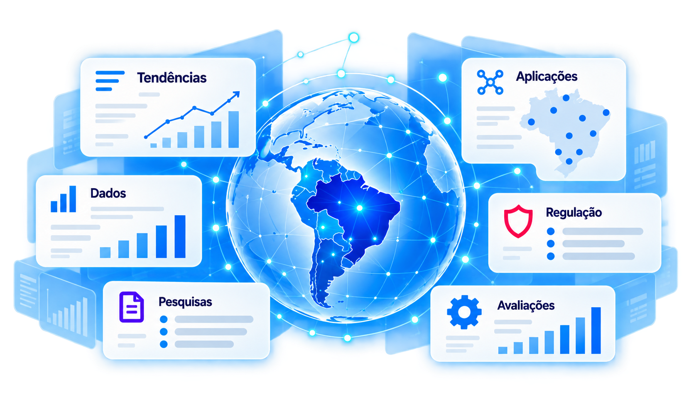

Monitora notícias, eventos e publicações para identificar novidades relevantes.
Observar.IA — Observatório de Inteligência Artificial do unesp.IA

O observatório monitora e analisa a evolução, a adoção e os impactos da Inteligência Artificial, integrando dados, pesquisas, tecnologias, regulamentações e tendências.

Em destaque
Novidades, dados e análises selecionadas pelo Observar.IA
Acompanhe tendências, explore dados, conheça pesquisas, compare tecnologias e entenda como a IA está sendo aplicada e regulamentada.
Agentes Inteligentes do Observar.IA
Uma rede de agentes especializados para apoiar o monitoramento de notícias, a organização de dados, a análise de regulamentações e a pesquisa.
Conheça as funções previstas. A publicação de conteúdos permanece sob curadoria e revisão humana.
Organiza dados de múltiplas fontes e prepara bases para análises.
Mapeia estudos, produções científicas e evidências no Brasil e no mundo.
Acompanha legislações, políticas públicas e recomendações.
Compara modelos, agentes e aplicações com critérios explícitos.
Identifica casos de uso em diferentes setores e seus impactos.
O Agente Observar.IA reunirá o conhecimento dos agentes especializados para permitir consultas ao Observatório em linguagem natural, com indicação das fontes.
Explore por tipo de conteúdo
Navegue por dados, pesquisas, avaliações, regulamentações, aplicações e relatórios.
Ver acervo completo
Dados e Indicadores
Explore publicações sobre dados, adoção, pesquisa e aplicações de IA.
Explorar dadosPainéis interativos em desenvolvimento.Análises do Observar.IA
Conheça análises e conteúdos que contextualizam os avanços da Inteligência Artificial.
Ver análisesSobre o Observatório
Conheça os objetivos, a metodologia, as fontes de dados e a equipe do Observar.IA.